<title>Guía rápida del técnico</title>
<meta name="claude:viewport-fit-sides" content="cover">
<link rel="preconnect" href="https://fonts.googleapis.com">
<link rel="stylesheet" href="https://fonts.googleapis.com/css2?family=Barlow+Semi+Condensed:wght@600;700&family=Inter:wght@400;500;600&display=swap">
<style>
  /* Layout: single reading column; each task is a numbered procedure with the real screen under the step it shows. */
  :root {
    --bg: #f4f6fb;
    --surface: #ffffff;
    --fg: #1b2236;
    --muted: #5b6479;
    --line: #dfe3ee;
    --accent: #5569ff;          /* the app's own indigo */
    --accent-soft: #eceffe;
    --click: #f97316;           /* same orange as the screenshot highlights */
    --click-soft: #fff1e6;
    --ok: #15803d;
    --font-head: "Barlow Semi Condensed", "Arial Narrow", system-ui, sans-serif;
    --font-body: "Inter", system-ui, -apple-system, "Segoe UI", sans-serif;
  }
  @media (prefers-color-scheme: dark) {
    :root:not([data-theme="light"]) {
      --bg: #10141f; --surface: #181e2d; --fg: #e6e9f2; --muted: #9aa3b8; --line: #2a3245;
      --accent: #8a99ff; --accent-soft: #232a48; --click: #fb923c; --click-soft: #3a2616; --ok: #4ade80;
      color-scheme: dark;
    }
  }
  :root[data-theme="dark"] {
    --bg: #10141f; --surface: #181e2d; --fg: #e6e9f2; --muted: #9aa3b8; --line: #2a3245;
    --accent: #8a99ff; --accent-soft: #232a48; --click: #fb923c; --click-soft: #3a2616; --ok: #4ade80;
    color-scheme: dark;
  }

  body {
    background: var(--bg); color: var(--fg);
    font: 16px/1.6 var(--font-body);
    padding-left: max(16px, env(safe-area-inset-left, 0px));
    padding-right: max(16px, env(safe-area-inset-right, 0px));
    padding-block: 0 4rem;
  }
  main { max-width: 780px; margin: 0 auto; display: grid; gap: 3.5rem; }
  h1, h2, h3 { font-family: var(--font-head); line-height: 1.15; text-wrap: balance; margin: 0; }
  h1 { font-size: clamp(2.2rem, 6vw, 3.1rem); }
  h2 { font-size: 1.9rem; }
  h3 { font-size: 1.3rem; }
  p { margin: 0; }
  a { color: var(--accent); }
  a:focus-visible { outline: 3px solid var(--click); outline-offset: 2px; border-radius: 4px; }
  b, strong { font-weight: 600; }
  .ui { /* names of buttons and menus exactly as on screen */
    font-weight: 600; color: var(--accent);
  }

  header { padding-top: 3rem; display: grid; gap: 1rem; }
  .eyebrow { font-family: var(--font-head); text-transform: uppercase; letter-spacing: .12em; color: var(--accent); font-weight: 700; font-size: .95rem; }
  .lede { color: var(--muted); font-size: 1.1rem; max-width: 60ch; }
  .legend { display: flex; align-items: center; gap: .75rem; font-size: .95rem; color: var(--muted); }
  .legend i { flex: none; width: 2.2rem; height: 1.3rem; border: 3px solid var(--click); border-radius: 6px; }

  /* the three tasks */
  .tasks { display: grid; grid-template-columns: repeat(3, minmax(0, 1fr)); gap: .75rem; }
  .tasks a {
    display: grid; gap: .35rem; padding: 1rem 1.1rem; text-decoration: none; color: var(--fg);
    background: var(--surface); border: 1px solid var(--line); border-radius: 12px;
  }
  .tasks a:hover { border-color: var(--accent); }
  .tasks .letter { font-family: var(--font-head); font-weight: 700; font-size: 1.5rem; color: var(--accent); }
  .tasks strong { font-size: 1.02rem; }
  .tasks span { color: var(--muted); font-size: .9rem; line-height: 1.45; }
  @media (max-width: 640px) { .tasks { grid-template-columns: 1fr; } }

  section { display: grid; gap: 1.5rem; scroll-margin-top: 1.5rem; }
  .section-head { display: grid; gap: .5rem; border-top: 2px solid var(--fg); padding-top: 1rem; }
  .section-head .eyebrow { color: var(--muted); }
  .section-head p { color: var(--muted); }

  /* numbered procedure */
  ol.steps { list-style: none; counter-reset: step; margin: 0; padding: 0; display: grid; gap: 1.5rem; }
  ol.steps > li { counter-increment: step; display: grid; grid-template-columns: 2.25rem minmax(0, 1fr); column-gap: .9rem; row-gap: .75rem; }
  ol.steps > li::before {
    content: counter(step); grid-row: 1; width: 2.25rem; height: 2.25rem; border-radius: 50%;
    display: grid; place-items: center; background: var(--accent); color: var(--surface);
    font: 700 1.1rem/1 var(--font-head);
  }
  ol.steps > li > * { grid-column: 2; }
  ol.steps > li > p:first-of-type { padding-top: .2rem; }

  figure { margin: 0; }
  figure img {
    display: block; width: 100%; height: auto; border-radius: 10px;
    border: 1px solid var(--line); box-shadow: 0 6px 24px -12px rgba(20, 30, 60, .35);
  }
  figure.narrow img { max-width: 520px; }
  figcaption { font-size: .85rem; color: var(--muted); margin-top: .45rem; }

  .table-wrap { overflow-x: auto; }
  table { border-collapse: collapse; width: 100%; font-size: .95rem; background: var(--surface); border: 1px solid var(--line); border-radius: 10px; overflow: hidden; }
  th, td { text-align: left; vertical-align: top; padding: .6rem .8rem; border-bottom: 1px solid var(--line); }
  th { font-family: var(--font-head); font-size: .95rem; text-transform: uppercase; letter-spacing: .05em; color: var(--muted); background: var(--accent-soft); }
  tr:last-child td { border-bottom: 0; }
  td:first-child { font-weight: 600; min-width: 9rem; }
  td em { color: var(--muted); }

  .note {
    padding: .85rem 1rem; border-radius: 10px; background: var(--click-soft);
    border-left: 4px solid var(--click); font-size: .95rem;
  }
  .note.info { background: var(--accent-soft); border-left-color: var(--accent); }
  .chip { display: inline-block; padding: 0 .55rem; border-radius: 999px; font-size: .8rem; font-weight: 600; line-height: 1.6; }
  .chip.pend { background: var(--click-soft); color: var(--click); }
  .chip.done { background: color-mix(in srgb, var(--ok) 15%, transparent); color: var(--ok); }

  .which { display: grid; gap: .5rem; }
  .which div { display: grid; grid-template-columns: 11.5rem minmax(0, 1fr); gap: 1rem; padding: .7rem 1rem; background: var(--surface); border: 1px solid var(--line); border-radius: 10px; }
  .which b { color: var(--accent); }
  @media (max-width: 560px) { .which div { grid-template-columns: 1fr; gap: .15rem; } }

  footer { color: var(--muted); font-size: .85rem; border-top: 1px solid var(--line); padding-top: 1rem; }
</style>

<main>
  <header>
    <div class="eyebrow">Atlas CMMS · Mantenimiento</div>
    <h1>Guía rápida del técnico</h1>
    <p class="lede">Todo lo que necesitás para el día a día en Atlas: abrir y cerrar órdenes de trabajo, pedir trabajos con una solicitud y reportar riesgos de seguridad. Seguí los pasos en orden.</p>
    <p class="legend"><i></i>En las capturas, el recuadro naranja marca dónde tenés que hacer clic.</p>
    <nav class="tasks" aria-label="Tareas">
      <a href="#ordenes"><span class="letter">A</span><strong>Orden de trabajo</strong><span>Abrir, trabajar y cerrar un trabajo.</span></a>
      <a href="#solicitudes"><span class="letter">B</span><strong>Solicitud de trabajo</strong><span>Pedir que alguien revise o arregle algo.</span></a>
      <a href="#riesgos"><span class="letter">C</span><strong>Evaluación de riesgos</strong><span>Reportar un peligro y su acción.</span></a>
    </nav>
  </header>

  <section id="ingreso">
    <div class="section-head">
      <div class="eyebrow">Antes de empezar</div>
      <h2>Ingresá a Atlas</h2>
    </div>
    <ol class="steps">
      <li>
        <p>Abrí el navegador (en la PC, tablet o celular) y entrá a la dirección de Atlas que te dio tu supervisor.</p>
      </li>
      <li>
        <p>Escribí tu correo en <span class="ui">Email address</span> y tu contraseña en <span class="ui">Password</span>. Después hacé clic en <span class="ui">Log In</span>.</p>
        <figure class="narrow">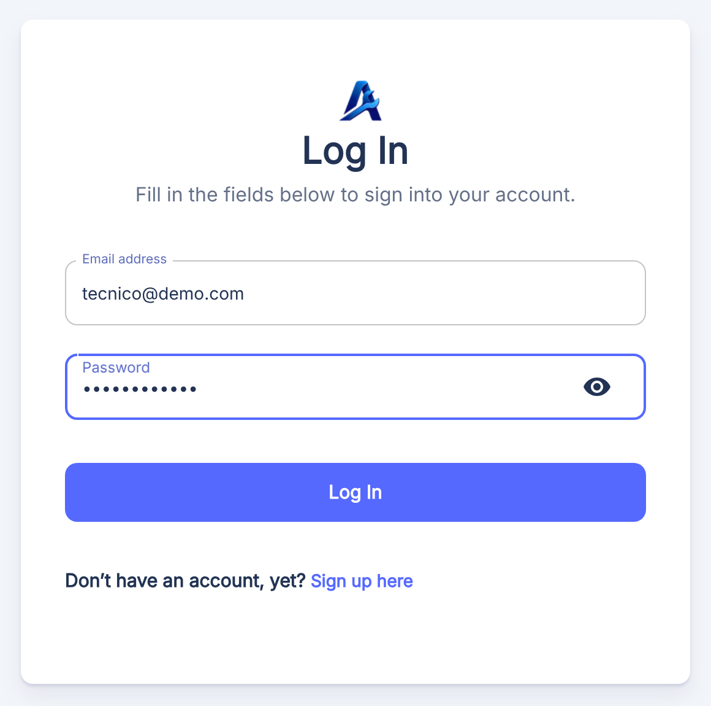</figure>
        <p class="note info">La pantalla de ingreso aparece en inglés. Una vez adentro, todo se muestra en español.</p>
      </li>
    </ol>

    <h3>¿Qué tengo que cargar?</h3>
    <div class="which">
      <div><b>Orden de trabajo</b><span>Hay un trabajo concreto para hacer y vos (o tu equipo) lo van a hacer.</span></div>
      <div><b>Solicitud</b><span>Encontraste una falla o algo que hay que hacer, y un supervisor tiene que aprobarlo y asignarlo.</span></div>
      <div><b>Evaluación de riesgos</b><span>Viste un peligro para personas, aeronaves o equipos, aunque no haya nada roto.</span></div>
    </div>
  </section>

  <section id="ordenes">
    <div class="section-head">
      <div class="eyebrow">A · Órdenes de trabajo</div>
      <h2>Abrir una orden de trabajo</h2>
    </div>
    <ol class="steps">
      <li>
        <p>En el menú de la izquierda entrá a <span class="ui">Órdenes de trabajo</span> y hacé clic en <span class="ui">+ Orden de Trabajo</span>.</p>
        <figure>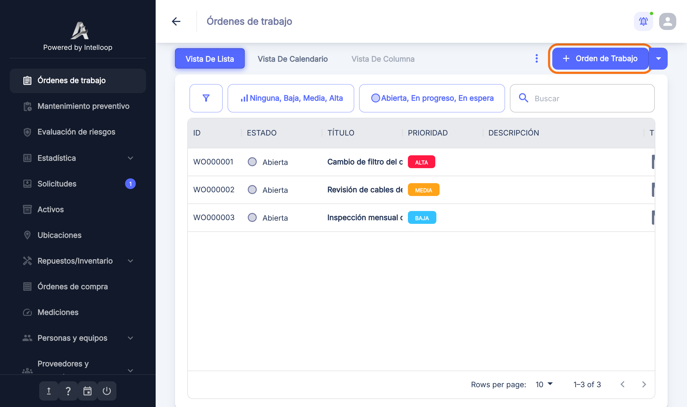</figure>
      </li>
      <li>
        <p>Escribí un <b>Título</b> corto (es el único campo obligatorio) y en <b>Descripción</b> contá qué hay que hacer.</p>
        <figure>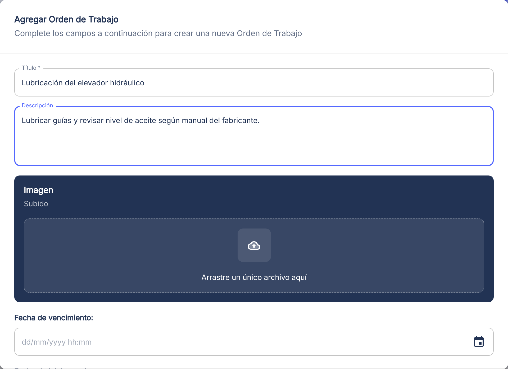</figure>
      </li>
      <li>
        <p>Bajá y completá lo que corresponda:</p>
        <div class="table-wrap">
          <table>
            <thead><tr><th>Campo</th><th>Qué poner</th></tr></thead>
            <tbody>
              <tr><td>Imagen / Archivos</td><td>Fotos de la falla o documentos. Arrastralos al recuadro o hacé clic para elegirlos.</td></tr>
              <tr><td>Fecha de vencimiento</td><td>Para cuándo tiene que estar terminado.</td></tr>
              <tr><td>Prioridad</td><td><em>Ninguna, Baja, Media o Alta.</em></td></tr>
              <tr><td>Trabajador principal</td><td>Quién se hace cargo. Si sos vos, elegite.</td></tr>
              <tr><td>Localización y Activo</td><td>Dónde está y qué equipo es (por ejemplo, Hangar 1 · Compresor de aire).</td></tr>
              <tr><td>Tareas</td><td>Una lista de pasos para tildar mientras trabajás.</td></tr>
            </tbody>
          </table>
        </div>
      </li>
      <li>
        <p>Al final del formulario, hacé clic en <span class="ui">Agregar</span>. La orden aparece en la lista como <b>Abierta</b>.</p>
        <figure>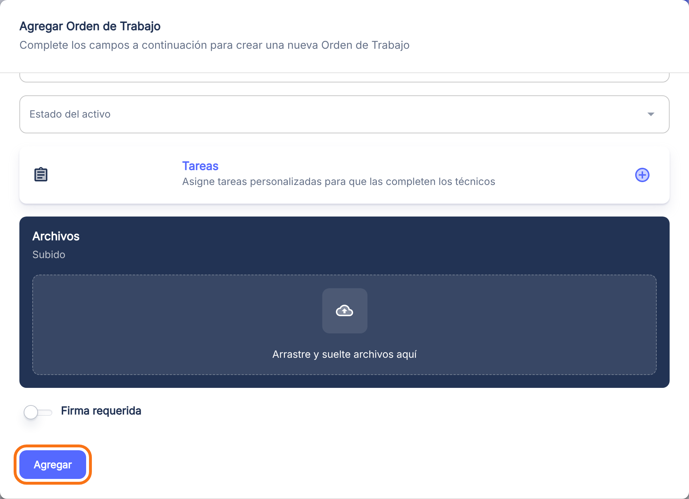</figure>
      </li>
    </ol>

    <h3>Trabajar y cerrar la orden</h3>
    <ol class="steps">
      <li>
        <p>Hacé clic en la orden en la lista para abrirla. Al empezar, cambiá el estado a <b>En progreso</b> y tocá <span class="ui">Iniciar Timer</span> para registrar tu tiempo.</p>
        <figure>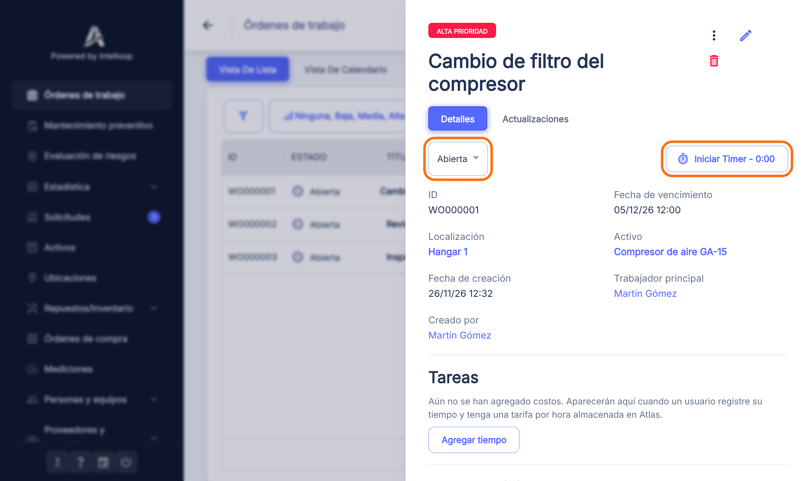</figure>
      </li>
      <li>
        <p>Cuando termines, abrí el selector de estado y elegí <b>Completa</b>. Si tenés que frenar (falta un repuesto, por ejemplo), elegí <b>En espera</b>.</p>
        <figure>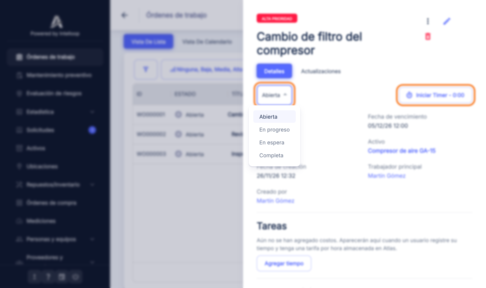</figure>
      </li>
      <li>
        <p>Escribí en <b>Comentarios</b> qué hiciste y qué encontraste, y hacé clic en <span class="ui">Cerrar</span>.</p>
        <figure class="narrow">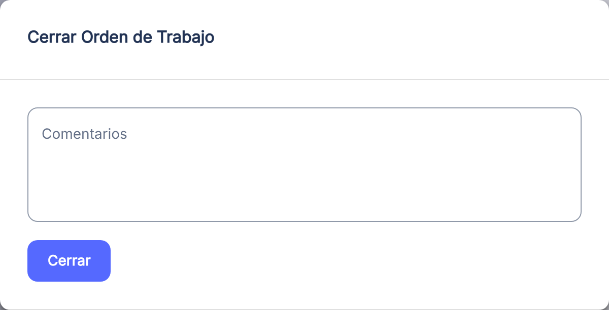</figure>
        <p class="note">Si la orden tiene <b>Firma requerida</b>, en esta ventana también vas a tener que firmar en pantalla con el dedo o el mouse.</p>
      </li>
    </ol>
  </section>

  <section id="solicitudes">
    <div class="section-head">
      <div class="eyebrow">B · Solicitudes</div>
      <h2>Generar una solicitud de trabajo</h2>
      <p>Usala cuando encontrás algo que hay que hacer pero no te toca a vos decidir cuándo ni quién. Un supervisor la revisa y, si la aprueba, se convierte en una orden de trabajo.</p>
    </div>
    <ol class="steps">
      <li>
        <p>En el menú entrá a <span class="ui">Solicitudes</span> y hacé clic en <span class="ui">+ Solicitud</span>.</p>
        <figure>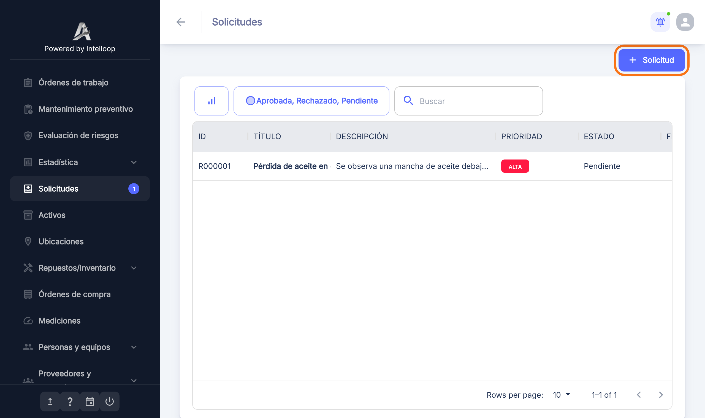</figure>
      </li>
      <li>
        <p>Completá <b>Título</b>, <b>Descripción</b> y <b>Prioridad</b>. Más abajo indicá la <b>Localización</b> y el <b>Activo</b>, y sumá una foto si podés.</p>
        <figure>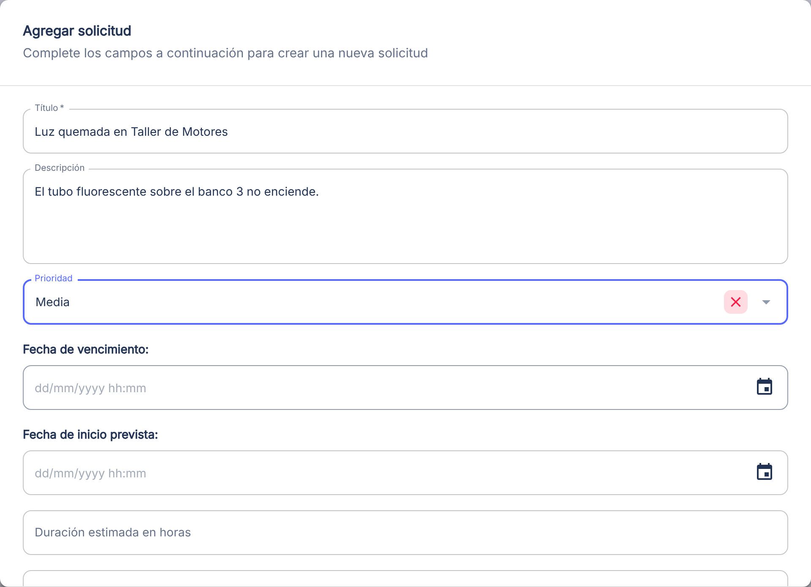</figure>
      </li>
      <li>
        <p>Hacé clic en <span class="ui">Agregar</span> al final del formulario.</p>
      </li>
      <li>
        <p>Seguí tu pedido en la columna <b>Estado</b> de la lista:</p>
        <div class="table-wrap">
          <table>
            <tbody>
              <tr><td>Pendiente</td><td>Todavía nadie la revisó.</td></tr>
              <tr><td>Aprobada</td><td>Se creó una orden de trabajo y ya aparece en <span class="ui">Órdenes de trabajo</span>.</td></tr>
              <tr><td>Rechazado</td><td>No se va a hacer. Abrí la solicitud para ver el motivo.</td></tr>
            </tbody>
          </table>
        </div>
      </li>
    </ol>
  </section>

  <section id="riesgos">
    <div class="section-head">
      <div class="eyebrow">C · Seguridad operacional</div>
      <h2>Completar una evaluación de riesgos</h2>
      <p>Reportá todo peligro que veas, aunque ya lo hayas controlado. El registro es de toda la empresa.</p>
    </div>
    <p class="note">Si el peligro es inmediato, primero asegurá la zona y avisale en persona a tu supervisor. Después cargalo en Atlas.</p>
    <ol class="steps">
      <li>
        <p>En el menú entrá a <span class="ui">Evaluación de riesgos</span> y hacé clic en <span class="ui">+ Nuevo reporte</span>.</p>
        <figure>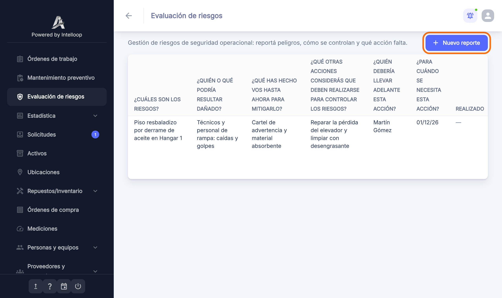</figure>
      </li>
      <li>
        <p>Respondé las preguntas. Solo la primera es obligatoria, pero cuanto más completes, más fácil es resolverlo.</p>
        <div class="table-wrap">
          <table>
            <thead><tr><th>Pregunta</th><th>Ejemplo</th></tr></thead>
            <tbody>
              <tr><td>¿Cuáles son los riesgos?</td><td>Cables sueltos del GPU cruzando la plataforma</td></tr>
              <tr><td>¿Quién o qué podría resultar dañado?</td><td>Personal de rampa: tropiezos y caídas</td></tr>
              <tr><td>¿Qué has hecho vos hasta ahora para mitigarlo?</td><td>Se señalizó la zona con conos</td></tr>
              <tr><td>¿Qué otras acciones considerás que deben realizarse?</td><td>Instalar canaleta pasacables de goma</td></tr>
              <tr><td>¿Quién debería llevar adelante esta acción?</td><td>Elegí a la persona de la lista</td></tr>
              <tr><td>¿Para cuándo se necesita esta acción?</td><td>La fecha límite</td></tr>
            </tbody>
          </table>
        </div>
      </li>
      <li>
        <p>Hacé clic en <span class="ui">Reportar</span>. El riesgo queda en la tabla.</p>
        <figure>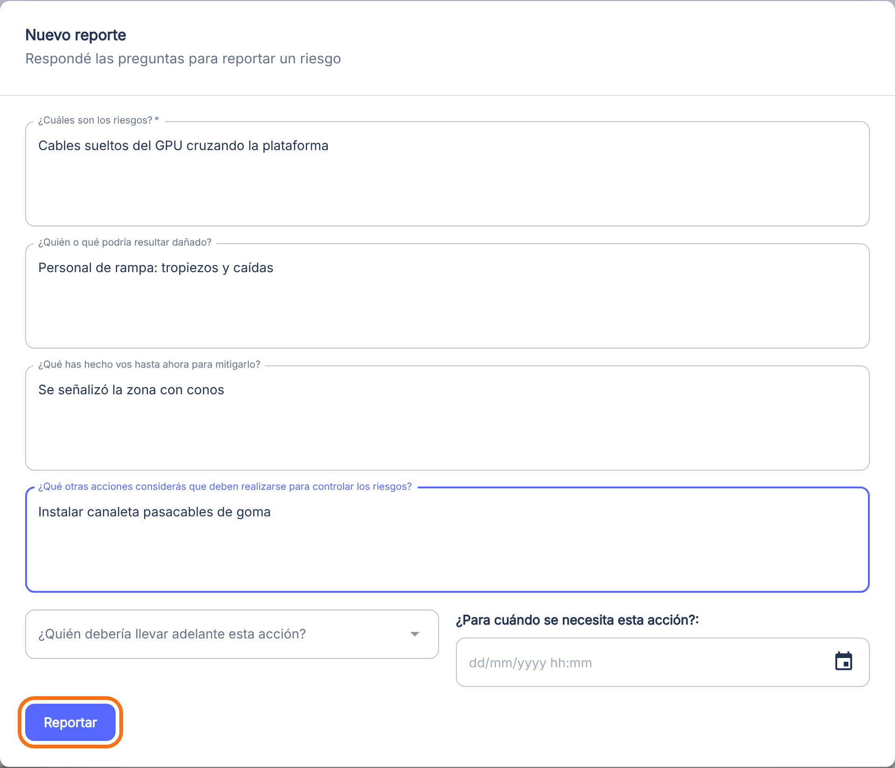</figure>
      </li>
      <li>
        <p>Para que la acción se haga, hacé clic en <span class="ui">Convertir este reporte en orden de trabajo</span>. Se abre el formulario de orden de trabajo ya completado con los datos del reporte; revisalo y hacé clic en <span class="ui">Agregar</span>.</p>
        <figure>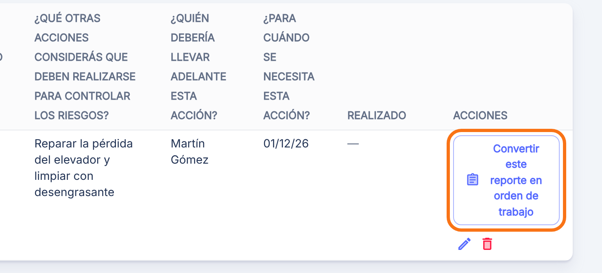</figure>
      </li>
      <li>
        <p>La columna <b>Realizado</b> muestra <span class="chip pend">Pendiente</span> mientras la orden esté abierta, y la fecha en <span class="chip done">verde</span> cuando se completa. No hace falta actualizarla a mano.</p>
      </li>
    </ol>
  </section>

  <footer>Capturas tomadas de Atlas CMMS con datos de ejemplo. Lo que ves en pantalla puede variar según los permisos de tu usuario.</footer>
</main>
